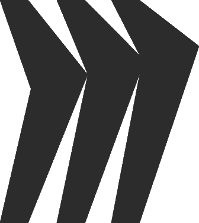
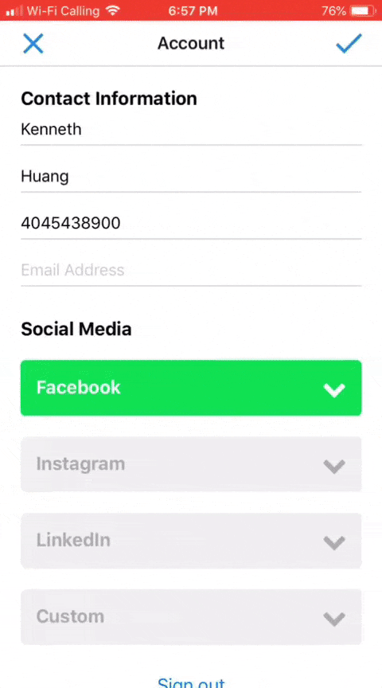
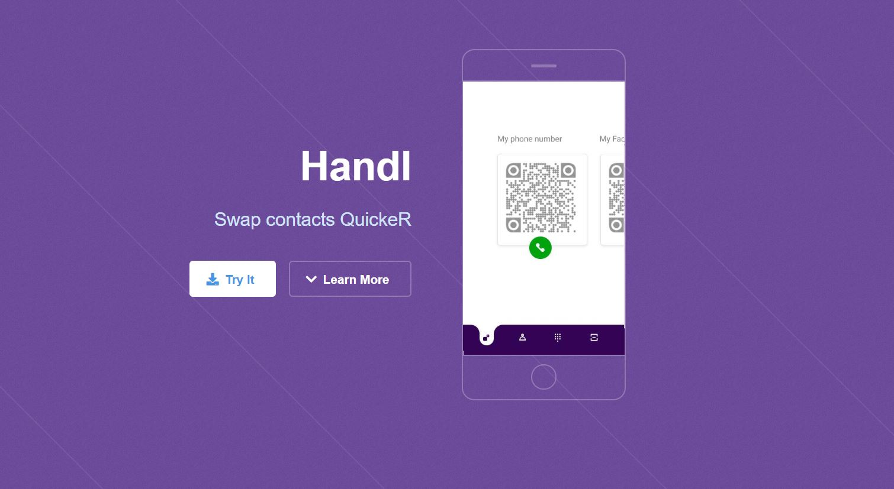
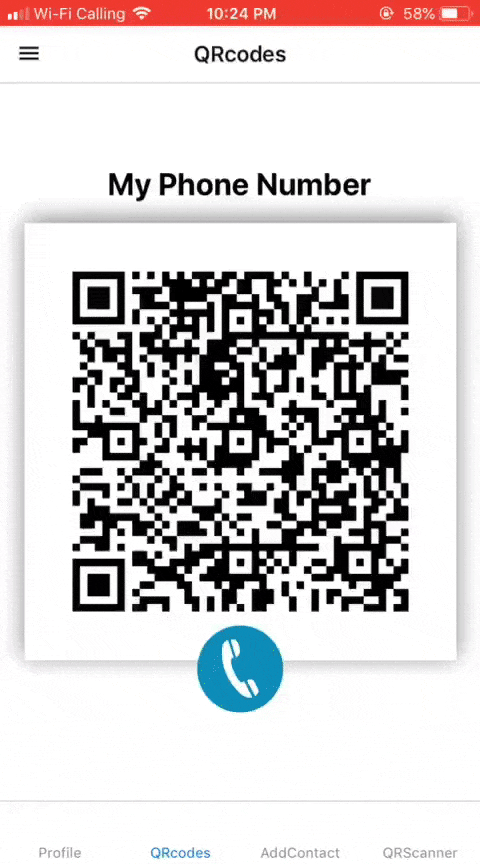
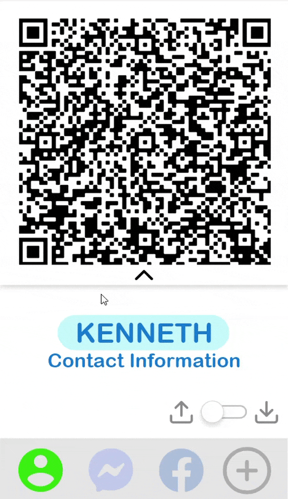
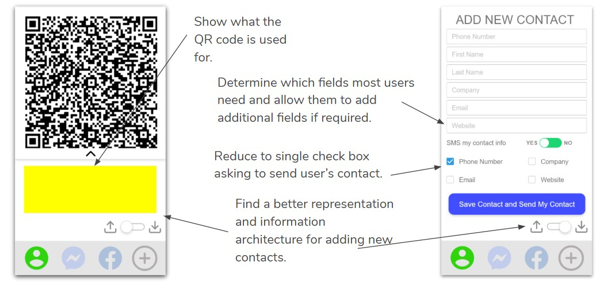
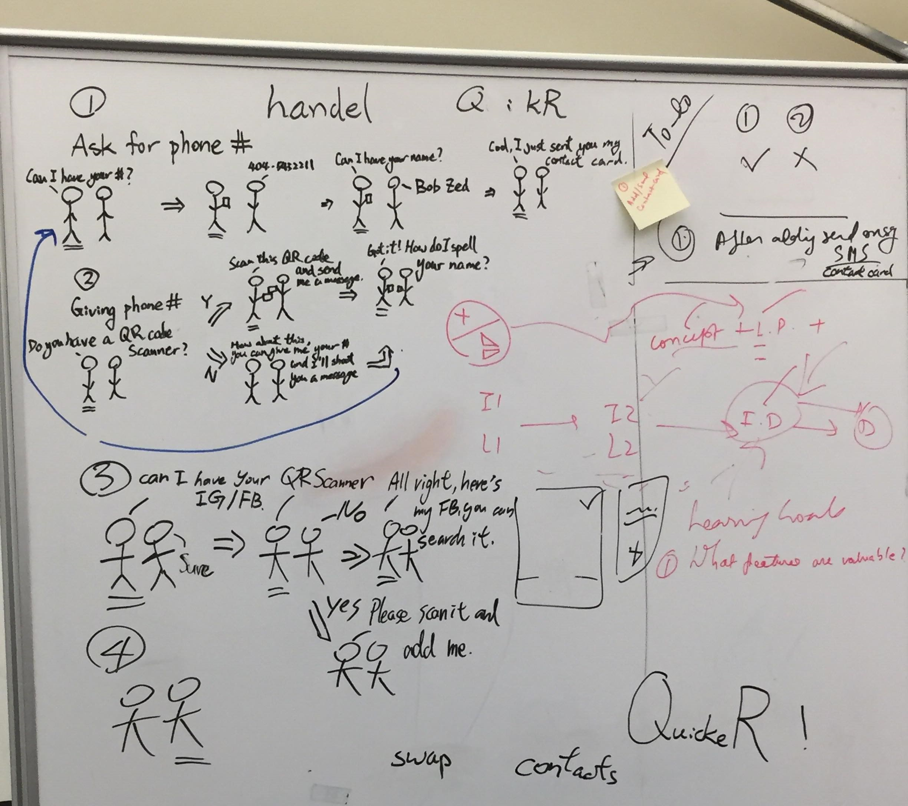
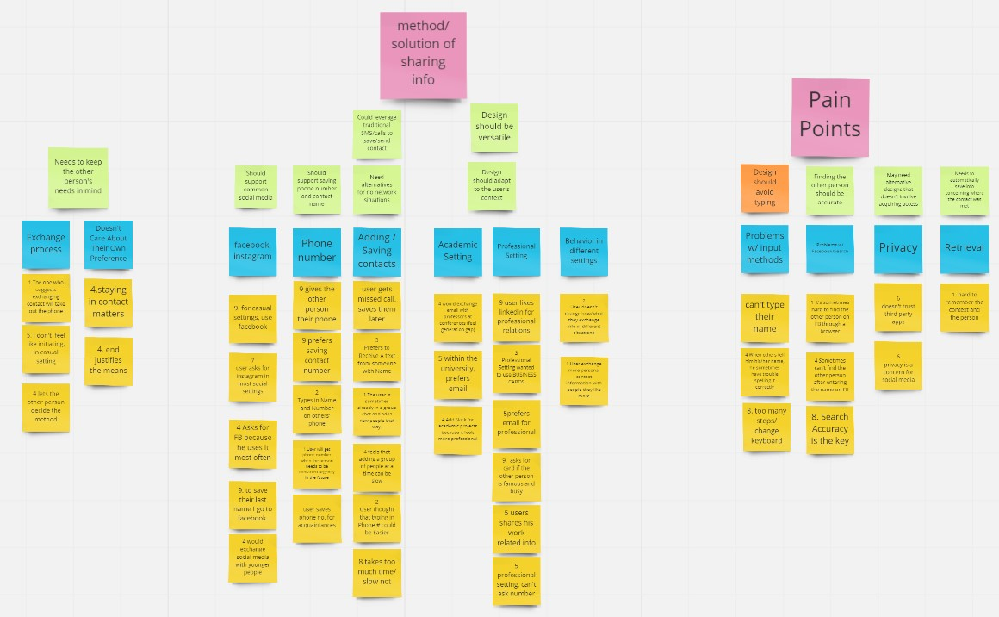

My Roles
Frontend Developer
UX Researcher
UX Designer
Project Leader
Team
Size: 5
This is an interdisciplinary team composed three developers, one designer, and one developer/designer (my role). As the project leader, I defined project vision and goals and coordinated teamwork to realize them. Aside from contributing to the UX and development of the project, I conveyed design considerations to the developers and informed the designer of technical constraints.
Tools and Languages
React Native
Adobe XD

Miro
JavaScript
HTML5
CSS3
My Contributions and Artefacts
Final Version App UI
Identified UI deficiencies in the previous prototype version, communicated with the designer and developers to improve the UI, and developed the accordions for text input.
Learned to create maintainable/scalable accordions using state variables, objects, and loops in React Native.

Handl Website
Created a website for our app by modifying and adding to an open-source template.
Learned how to quickly transform a website template into one that fits our needs.

App UI and Functions
Designed and implemented the translation of URLs/profile information into QR codes and programmed the storage/management of user information.
Learned to use local storage (AsyncStorage) and server storage (via RESTful API) to persist user data in the form of objects and experienced the convenience of writing maintainable and scalable code by using loops when developing the QR code components.


Adobe XD Mockup
Designed system information architecture according to feature requirements and created clickable mockups for early testing.
Learned to create high fidelity mockups with animations and to collect user feedback with them.



Storyboarding and Ideation
Lead team discussions on various use cases/scenarios in which the app may be used with the help of storyboards.
Learned that presenting ideas in simple storyboards helps the team capture user needs and identify corner use cases.

Interviews and Affinity Map
Conducted interviews to understand user needs when exchanging contact information, performed affinity mapping on user research findings as a team, and identified design implications.
Learned how to identify user needs from interviews and collaboratively analyze them with a team.

Domain and Competitive Research
Gathered and organized information on existing solutions and identified value propositions unaddressed by current solutions.
Learned to learn from existing solutions and analyze their reasons of success or failure.